Marina Maroz: works
Graphic artist & printmaker
Mezzotint and soft ground etching. Monochrome symbolic still lifes about faith and sacrifice, abandonment and hope, and the relationship between the human and the divine.
Evidences · 2021–2025 Harvest · 2020–2025 Ex libris · 2021–2025 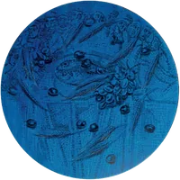
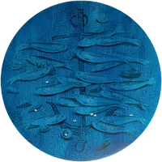
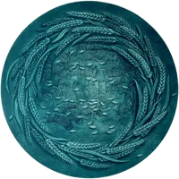
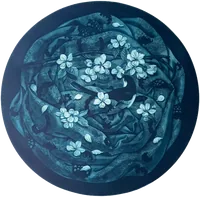
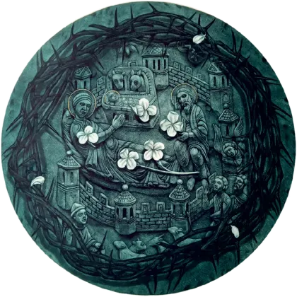
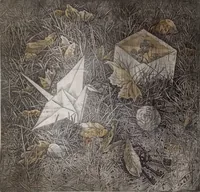
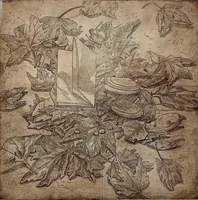
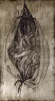
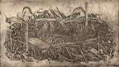
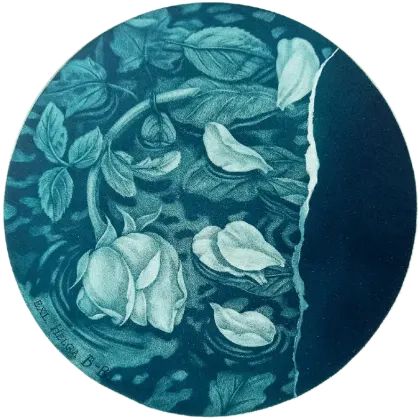
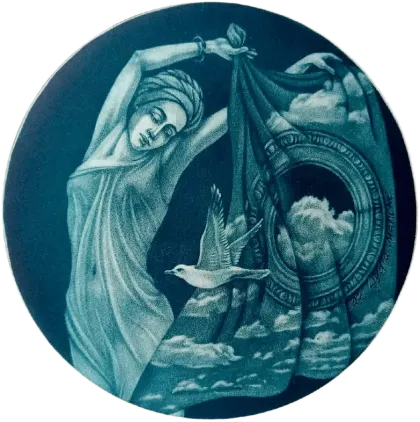
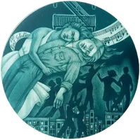
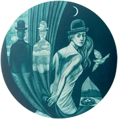
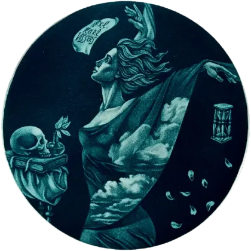
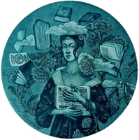
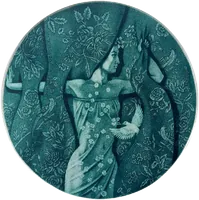
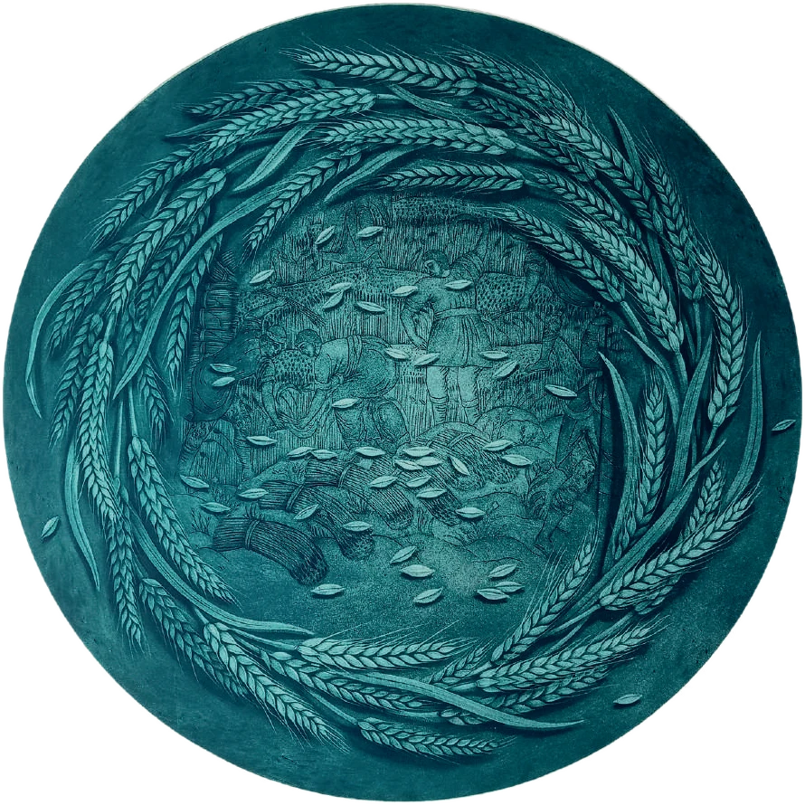
Evidences 04 / 24
Harvest time
2025 · Mezzotint on paper · ⌀ 50 cm
←
→
View the impression
Turn the wheel: drag, scroll, or use the arrow keys
Reconciliation circle , 2025Salvific meal , 2025Quiet refuge , 2025Harvest time , 2025Great expectations , 2022Predestination , 2021Found , 2023Good news , 2024New pearls , 2025Binded , 2021Wide open , 2021Abandoned , 2020Bittersweet memories , 2023Treasure , 2021Hommage Giorgio de Chirico , 2023In flight , 2022Cognition , 2023West Side Story , 2023At rest , 2022Hommage René Magritte , 2022In dreams , 2021Vanity , 2021Books catcher , 2023In the secret garden , 2025